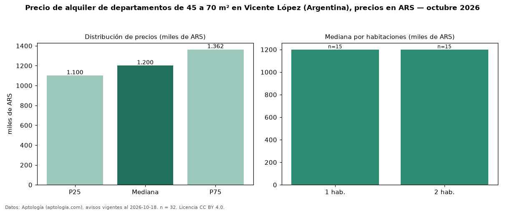

Precio de alquiler de departamentos de 45 a 70 m² en Vicente López (Argentina), precios en ARS — octubre 2026
En Vicente López (Argentina), la mediana de canon mensual de departamentos de 45 a 70 m² es ARS 1,20 millones, según 32 avisos vigentes. Prácticamente coincide con la mediana de todos los departamentos en alquiler de Vicente López (ARS 1,19 millones, n = 69); este segmento reúne el 46 % de esos avisos. Por metro cuadrado, la mediana es ARS 22.390/m² al mes (n = 32), 7 % por encima del conjunto de referencia (ARS 20.984/m²). El área mediana anunciada es 52 m². El segmento con más oferta es el de 1 habitación (15 avisos, mediana ARS 1,20 millones); pasar de 1 habitación a 2 habitaciones cambia la mediana +0 %. La mitad central de los avisos va de ARS 1,10 millones a ARS 1,36 millones (razón 1,2), una dispersión baja. Datos: Aptología (aptologia.com), CC BY 4.0 — https://www.aptologia.com/ar/alquiler/vicente-lopez. Archivos: PDF, CSV con las cifras y gráfica PNG.

| Avisos únicos | 32 |
|---|---|
| Percentil 25 | COP 1.100.000 |
| Mediana | COP 1.200.000 |
| Percentil 75 | COP 1.362.500 |
| Mediana por m² | COP 22.390 |
Fuente: avisos vigentes de portales inmobiliarios recopilados por Aptología, deduplicados (mínimo 30 avisos únicos por celda). Precios pedidos, no cerrados. Fecha: 2026-10-18.